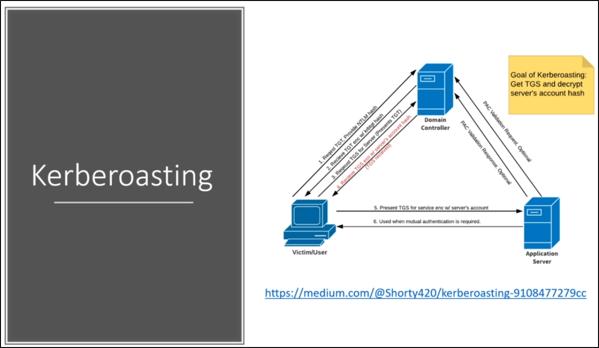

Kerberoasting Overview
https://medium.com/@Shorty420/kerberoasting-9108477279cc
https://www.youtube.com/watch?v=qW361k3-BtU
How Kerberos works:
We have the Domain Controller (also known as Key Distribution Center) and the User
(The Application Server has a SPN: Service Principal Name)
1) The User request a TGT (Ticket Granting Ticket) and give the NTLM hash
2) The Domain Controller send a TGT + TGT Kerberos hash
3) To access the Application Server, the user request a TGS (Ticket Granting Service),- presenting its TGT to the Domain Controller/KDC
4) The Domain Controller send the TGS + Encrypted server account hash
And here, Kerberos job stops.
5) The use present to the Application Server (Service),- the User present the TGS and the server decrypt it using its own hash:
- here the server chose if the user is authorized or not
6) The server says back YES or NO
The most important thing to understand is:
We have a valid user account (User/Pass) that give us a valid TGT
With the TGT we can request a TGS encrypted + Server Hashes (We can crack those hashes!!)

Steps to Kerberoasting:
1) Get SPNs, Dump Hash: We are requesting a service- Down below there is the TGS with the hash of a server account (E.G. SQLService)

And we can crack the hash over there, we will get the password of the server account: